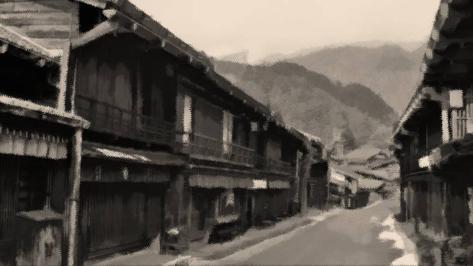

Script 0000212D
Saien. Do you know the word?
Sai means learning and talent; en is a term of praise for a woman.
In other words, saien is the word for a woman of high learning and talent.
Sai means learning and talent; en is a term of praise for a woman.
In other words, saien is the word for a woman of high learning and talent.
Sadly, however, depending on the era and its ideology, even the existence of a saien may go unknown.
Shiyo 678, further back still from the present day of Shiyo 800.
In society at large in those days, male dominance ran deep, and there were times when it was held that those who made their mark on the world must always be men, and that women must be the ones who supported those men from the shadows.
Shiyo 678, further back still from the present day of Shiyo 800.
In society at large in those days, male dominance ran deep, and there were times when it was held that those who made their mark on the world must always be men, and that women must be the ones who supported those men from the shadows.
If, in an age of male dominance, there had been a woman called a saien.
Perhaps the world would have changed once again, greatly, or even just a little.
Indeed, it is not known that there was a woman who changed the world in small ways, and in great ones.
Perhaps the world would have changed once again, greatly, or even just a little.
Indeed, it is not known that there was a woman who changed the world in small ways, and in great ones.
Though she was blessed with a rare talent, because of the era and its ideology, that talent never became known to the world.
That is, to the world on the surface―
That is, to the world on the surface―
Long, long ago, ships from the West came from far across the sea.
The time had come for this country, too, to truly mingle with the civilization of the Great Powers, but it still fell far short of them.
Before long, though, this country too would gain the strength to stand alongside the West.
To that end, we would have to learn a great deal about the West, starting now.
So I thought.
The time had come for this country, too, to truly mingle with the civilization of the Great Powers, but it still fell far short of them.
Before long, though, this country too would gain the strength to stand alongside the West.
To that end, we would have to learn a great deal about the West, starting now.
So I thought.

"Kikyo, are you doing that sort of thing again...?"
As I was devouring Father's books, those words suddenly came my way.
"Father, where would the next volume of this book be?"
"Oh, you..."
As I was devouring Father's books, those words suddenly came my way.
"Father, where would the next volume of this book be?"
"Oh, you..."
Reading books and devoting oneself to study were what men did.
Because of that prevailing attitude, Father frowned on my reading.
Rather than such things, he wanted me to acquire the refinement of a woman and become a woman who walked one step behind a man.
Father always said so, but...
Because of that prevailing attitude, Father frowned on my reading.
Rather than such things, he wanted me to acquire the refinement of a woman and become a woman who walked one step behind a man.
Father always said so, but...
"Here. This one."
"Thank you, Father!"
Perhaps Father had given up by now, because he had started to turn a blind eye to my reading.
"Thank you, Father!"
Perhaps Father had given up by now, because he had started to turn a blind eye to my reading.
Because you're a man. Because you're a woman.
Anyone who says nothing but such outdated things will only be swallowed by the wave of civilization that is coming.
Even when the new age comes, I will ride that wave and live on.
And for that, I must acquire learning, starting now.
Anyone who says nothing but such outdated things will only be swallowed by the wave of civilization that is coming.
Even when the new age comes, I will ride that wave and live on.
And for that, I must acquire learning, starting now.

And so I was a clever woman of some fame in these parts.
On the abacus I lost to none of the men around, and in a debate I could even crush my opponent with logic rather than with emotional appeals.
With that reputation, I was a girl genius of some fame in these parts.
From where Father stood, he surely did not think well of me as I was.
I understood Father's side of it, but unfortunately my interest and my passion would not turn in that direction.
On the abacus I lost to none of the men around, and in a debate I could even crush my opponent with logic rather than with emotional appeals.
With that reputation, I was a girl genius of some fame in these parts.
From where Father stood, he surely did not think well of me as I was.
I understood Father's side of it, but unfortunately my interest and my passion would not turn in that direction.
―It was then that I met a certain gentleman.

At the time, I was watching from out of sight as a cart carried unknown goods brought from the West.
No doubt they were being taken to the Emperor's castle, to be presented there.
To begin with, the gap in strength between Japan and the West was plain to see.
Those gifts being presented were less a show of respect for the Emperor than a display of the Great Powers' strength.
No doubt they were being taken to the Emperor's castle, to be presented there.
To begin with, the gap in strength between Japan and the West was plain to see.
Those gifts being presented were less a show of respect for the Emperor than a display of the Great Powers' strength.
Inside were unknown goods I knew nothing about.
I would surely never get to hold them in my hands, but just sending my dreams across the sea like this was enough to make my heart race.
I would surely never get to hold them in my hands, but just sending my dreams across the sea like this was enough to make my heart race.
Let me say this so there is no misunderstanding: I am not dreaming of crossing the sea myself.
If those things were absorbed into Japan and fused with it, how much richer would this country become?
What I dream of is this country in its prosperity.
If those things were absorbed into Japan and fused with it, how much richer would this country become?
What I dream of is this country in its prosperity.
"Um, excuse me..."
Suddenly, a gentleman's voice came from behind me.
Perhaps because I had been so absorbed in the cart, I had not sensed anyone there at all.
I turned around, and―
Suddenly, a gentleman's voice came from behind me.
Perhaps because I had been so absorbed in the cart, I had not sensed anyone there at all.
I turned around, and―

―!!
There stood one man, clad in a Noh mask and a red cloth.
At that bizarre sight, I covered my mouth.
There stood one man, clad in a Noh mask and a red cloth.
At that bizarre sight, I covered my mouth.